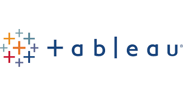
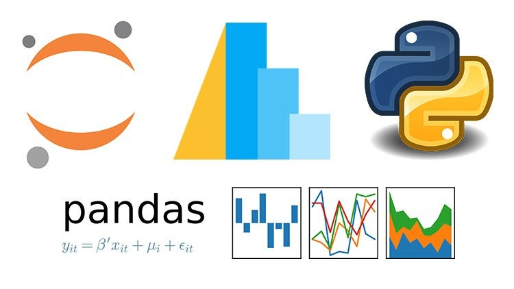
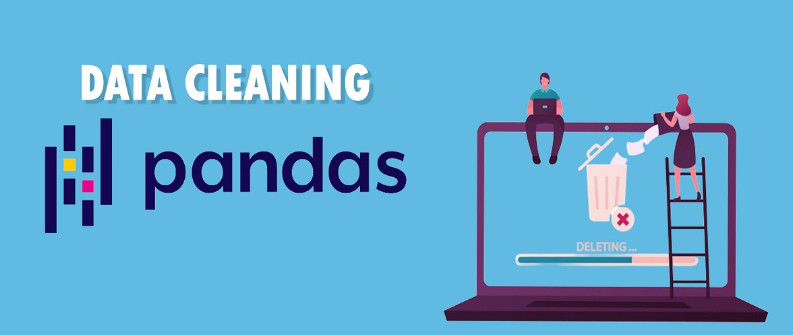
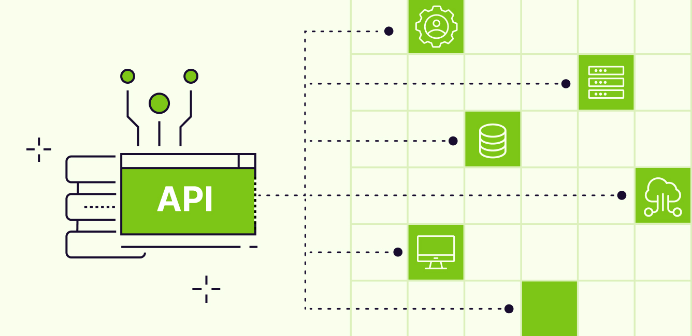

Performed data cleaning on a housing dataset by handling missing values,
correcting inconsistencies, and standardizing formats.
Used tools like Excel, SQL, and Python to prepare accurate, analysis-ready data.

Explored COVID-19 data to uncover trends in cases, deaths, and recoveries.
Used SQL, Excel, and Python to analyze patterns and generate meaningful insights.

A collection of Tableau projects showcasing interactive dashboards and data visualizations.
Demonstrates skills in storytelling, data exploration, and insight-driven decision-making using Tableau.

Analyzed a survey dataset using Power BI to uncover trends and key insights.
Built interactive dashboards with visualizations to support data-driven decision-making.

Cleaned and organized raw data in Excel, handling missing values and inconsistencies.
Created charts and dashboards to visualize insights and support analysis.

Completed an end-to-end Excel project, including data cleaning, analysis, and visualization.
Used formulas, pivot tables, and dashboards to generate insights and support decision-making.
Built a Python project to scrape tabular data from a website.
Used libraries like BeautifulSoup and Pandas to extract, clean, and structure the data for analysis.

Conducted exploratory data analysis using Python (Pandas) to uncover patterns and trends.
Used summary statistics and visualizations to generate insights and guide decision-making.

Performed data cleaning using Python (Pandas) by handling missing values, removing duplicates, and standardizing data.
Prepared structured, analysis-ready datasets for accurate insights.
Built an Amazon web scraper using Python to extract product data such as prices, ratings, and titles.
Used BeautifulSoup and Pandas to clean, structure, and analyze the collected data.

Automated cryptocurrency data extraction from a website API using Python.
Appended and analyzed real-time data to track trends and support data-driven insights.